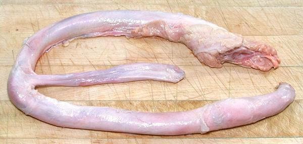

Beef "Pizzle"

[Bull Pecker, Bull Dick; El Miembro Viril del Toro (Spanish);
Cardán (Bolivia ("Driveshaft"))]
Most people in North America know this item only as dried sticks
sold as dog chew treats (bully sticks), but, at one time, in the
American South, they were dried and made into walking sticks (also
useful for beating slaves). They are not featured by the porn industry
because bulls are not nearly as cooperative as horses and dogs.
Beef pizzles are now easily available in North America, because any
large Asian market will have plenty of them in the frozen meat cases.
They are popular as a "medicinal" item, reputed to improve strength
and endurance in certain athletic activities that are beyond the scope
of these pages.
The photo specimen, purchased from a large Asian market in
Los Angeles (Alhambra) was 28 inches long and weighed 11 ounces.
Cost was 2017 US $7.99 / pound.
More on Beef Innards
While most noted for use by Asians, Beef Pizzle has a similar
reputation in parts of South America. It is used instead of Tripe as
the basis for the Bolivian national hang-over cure soup, Caldo de
Cardán.
Buying:
These can be found in any large Asian market
(at least here in Southern California) curled up in foam trays in the
frozen meat cases.
Prep:
These need a bit of attention before you start
to cook.
- First the Pizzle must be split along the urethra. This can be done
with a knife, but some have found it easier to jam one blade of a
pair of kitchen shears into the urethra, then just snip from one end
to the other.
- At this point, you need to wash it throughly and give it a soak
in water to clean the split plumbing.
- Next, there is a tough outer membrane that doesn't cook well.
Plunge the Pizzle into a pot with plenty of boiling water for
a minute or two. After this the membrane will be firmed up and
can be peeled off.
- Give it another wash and you're good to go.
Cooking:
You want to use a slow cooker here, because
Pizzle is very tough and needs to be simmered for 10 hours before it
is edible. We hope to have a complete tested recipe for Bolivian
Caldo de Cardán (Driveshaft Soup) on this site soon.
ab_pizzle 170721 - www.clovegarden.com
©Andrew Grygus - agryg@clovegarden.com - Photos on this
page not otherwise credited are © cg1 -
Linking to and non-commercial use of this page permitted